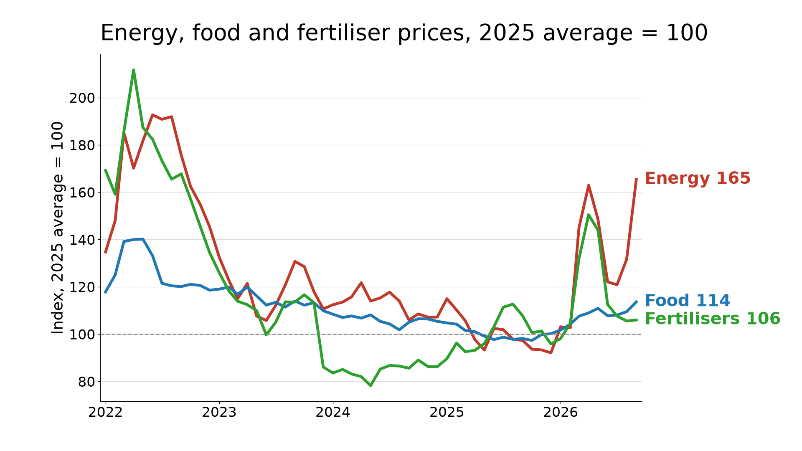
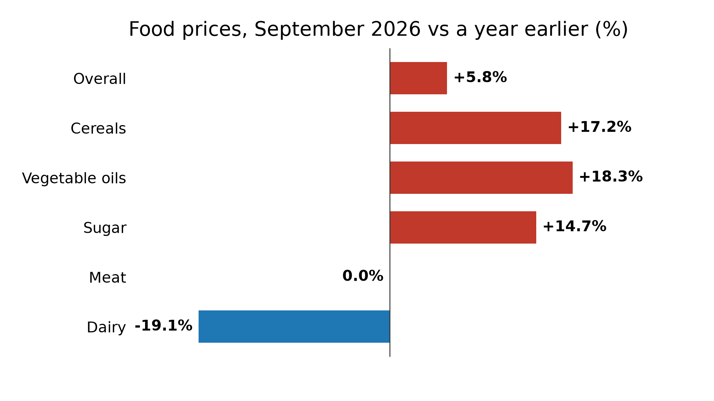

After oil, the food bill
How an energy shock reaches the supermarket, and who pays for it
The World Bank's Commodity Markets Outlook, published on 28 October, expects commodity prices to rise 23% in 2026, led by a 32% jump in energy, with Brent crude averaging $91 a barrel this year against $69 in 2025 and reaching about $110 in mid-October, and the same report expects food commodity prices to rise about 10% in 2026 and a further 7% in 2027, which compounds to about 18% over the two years rather than 17%, because the second rise applies to prices that are already 10% higher (1.10 × 1.07 ≈ 1.18), and that matters because the fuel shock of this year is now working its way into the price of what people eat.

How fuel becomes food
Energy reaches farms and ships through several channels at once, and the Bank's outlook names them: diesel, whose wholesale price has risen far more than crude oil because refining capacity is tight and Russian fuel exports have been curbed, fertiliser, whose average price is projected to rise 14% in 2026 after an early surge in urea, and the biofuel demand that ties maize and vegetable oils to fuel prices. Grain shipping adds a fourth channel, since attacks on Black Sea export infrastructure helped lift global grain prices 14% between June and September, which matters because Russia and Ukraine together supply about 30% of world wheat exports.
The Food and Agriculture Organization's food price index shows where this has landed, averaging 136.0 points in September, 5.8% above a year earlier, with cereals up 17.2%, vegetable oils up 18.3% and sugar up 14.7%, while meat was level with a year ago and dairy was 19.1% lower, so the increase sits in the crops that depend most on fuel, fertiliser and weather, which fits an input cost story more than a general rise in food demand. The index is still 15.1% below its March 2022 peak, and the Bank notes that near record staple grain supplies from the 2025 to 2026 season have kept prices from rising further, so this is a rise and not yet a crisis.

Weather on top of fuel
The United States Climate Prediction Center said on 8 October that El Niño continues to strengthen, with a strong or very strong event more than 83% likely through January to March 2027 and an 83% chance, for October to December, of an event stronger than any recorded since 1950, which matters for food because the Bank's outlook already shows rice, sugar and palm oil responding, with its 2027 price forecasts raised by 21%, 12% and 15% since April. The Bank still expects the overall effect on food commodity prices to be manageable, since weather lifts harvests in some regions while hurting them in others and total grain supplies in 2026 to 2027 are expected to be 3% larger than in 2024 to 2025, so its baseline describes higher prices without major stress in global food markets.
Who pays
Lower income economies are the most exposed, because El Niño exposure is greatest in fragile and low income countries where food insecurity is already high, according to the Bank, which estimates that severe food insecurity affected 9.5% of the world's population in 2025, about 779 million people, against an average of 8.1% in 2015 to 2019, and that median food price inflation in emerging market and developing economies rose to 3.9% in the third quarter from 3.5% in the second. The International Monetary Fund's October outlook expects world headline inflation to rise to 4.7% in 2026 before easing to 4.1% in 2027 and says energy importing economies outside the technology value chain face the most difficult outlook, so dearer food arrives when energy has already pushed inflation up, by about 1 percentage point across the G7 in recent months according to the Bank.
The policy squeeze
The Federal Reserve held its target range at 3¾ to 4% on 28 October, with two members preferring a rise of a quarter point and the statement calling inflation elevated, a split that matters for food importers because the Bank warns that a more hawkish turn by central banks in advanced economies could push capital out of emerging markets and weaken their currencies, which would make imported food and fuel dearer in local money. For governments, the IMF advises preserving price signals and relying mainly on temporary, targeted income support for the most vulnerable, and the Bank adds that in past food price spikes trade restrictions meant to shield domestic consumers triggered panic buying and pushed global prices higher, which is why export bans on food, fuel and fertiliser are the policy choice most worth watching.
The adverse case
The Bank's baseline assumes no major escalation in the Middle East, a recovery in Russian oil output, easing constraints on Black Sea food shipments and manageable crop losses from El Niño, and its adverse scenario removes those assumptions together, with Brent averaging $105 a barrel in 2027 and food commodity prices 12% above the baseline, slightly above their 2022 level, so a food crisis would need several things to go wrong at the same time rather than one.
At the kitchen table
For the roughly 779 million people the World Bank already counts in severe food insecurity, dearer food is not a line in an index. A household that spends most of what it has on food cannot absorb a rise by cutting extras, so it eats smaller meals, skips some, or switches to cheaper staples with fewer vegetables and less protein. When that is not enough, the money comes from elsewhere: school fees go unpaid, a visit to the clinic is put off, savings are spent or belongings sold. And every day carries the worry of where the next meal will come from.
My reading is that 2026 is not yet a food crisis, since the FAO index is well below its 2022 peak and last season's grain supplies were large, but 2027 could be a food price year, because the fuel that runs tractors, ships and fertiliser plants has become dearer while the weather adds a second cost. The outcome depends less on El Niño alone than on whether the energy and Black Sea disruptions ease as the baseline assumes, and the releases to watch are the next El Niño update on 12 November, the World Bank's monthly prices on 2 December and the FAO index on 4 December.
The data and code behind the charts are public on GitHub: https://github.com/eokinyo/food-after-oil-2026
Sources
- World Bank, Commodity Markets Outlook, October 2026, press release (released 28 October 2026): https://www.worldbank.org/en/news/press-release/2026/10/28/commodity-markets-outlook-october-2026
- World Bank, Commodity Markets Outlook, October 2026, report text (released 28 October 2026): https://openknowledge.worldbank.org/bitstreams/2e32d5c5-e52a-4701-aab2-28bd7bc9d226/download
- World Bank, Commodity Markets page, monthly prices published 2 October 2026 (used here; next update 2 December 2026): https://www.worldbank.org/en/research/commodity-markets
- Food and Agriculture Organization, Food Price Index (released 2 October 2026, used here; next release 4 December 2026): https://www.fao.org/worldfoodsituation/foodpricesindex/en/
- NOAA Climate Prediction Center, ENSO Diagnostic Discussion (issued 8 October 2026; next 12 November 2026): https://www.cpc.ncep.noaa.gov/products/analysis_monitoring/enso_advisory/ensodisc.shtml
- International Monetary Fund, World Economic Outlook, October 2026 (released 13 October 2026): https://www.imf.org/en/publications/weo/issues/2026/10/13/world-economic-outlook-october-2026
- Federal Reserve, FOMC statement (released 28 October 2026): https://www.federalreserve.gov/newsevents/pressreleases/monetary20261028a.htm